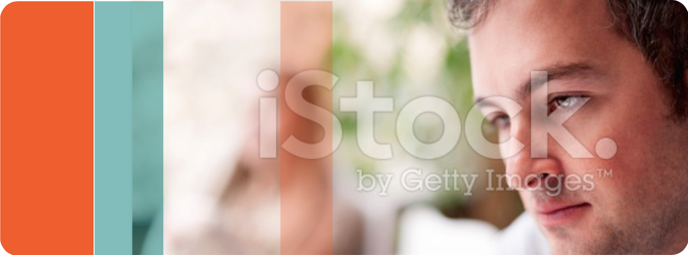

Feeling suicidal is a very difficult place to be, as it can feel scary and very distressing. We want to help you stay safe and feel better.
Sometimes life can feel so bad that you don’t want it to go on anymore.
Suicidal people don’t necessarily / usually want their life to end – they just want their emotional or physical
pain to end.
Suicidal thoughts sometimes start because people feel overwhelmed by their problems or their situation.
When we get overwhelmed we can find it hard to see a way out. Our thinking can become very negatively
focussed and narrowed down and it becomes difficult to get perspective and find solutions.
Suicidal thoughts are far more common than people realise – we just don’t talk about them – we suffer in
silence.
People can become suicidal if they have really difficult or upsetting things to deal with or if they have lots of
smaller worries that combine to make them feel overwhelmed.
Telling someone how you feel can be embarrassing or frightening. But talking to someone is the first step to
getting help, staying safe and developing a sense of hope.